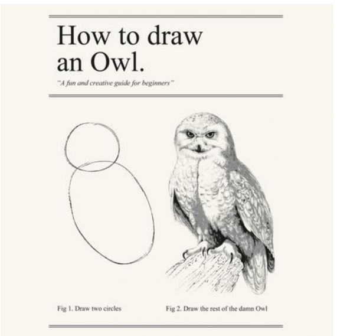
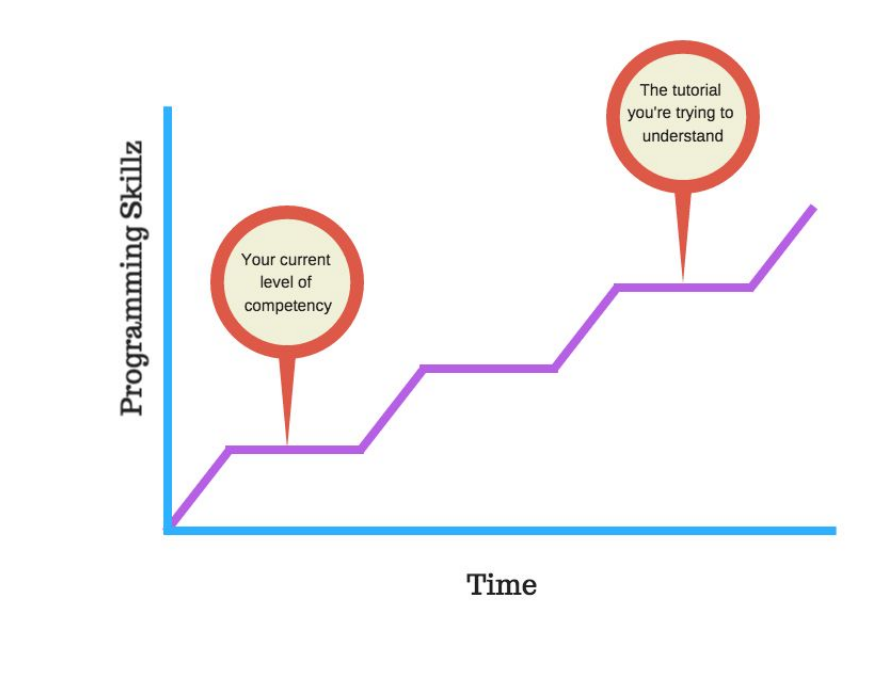

There are far too many tutorials where you see the “this is
how you draw an owl” phenomenon.

It’s almost as if the programmer had good intentions and
started by showing you how to do everything step-by-step.
But then, at some point, he realises that he has embarked
on a Sisyphean task and gives up. I’ve seen tutorials where
the author starts with an excruciating level of detail then
mid-way reverts to “now you simply set up a cloud
database”. Bearing in mind that this is a tutorial aimed at
beginners!
This leads to several problems. The most common problem
is a student who just copies the code in the tutorial and has
no clue what any of it does. Why did he add that extra line
after parsing the JSON? Why is he making this dictionary
differently from the last one?
It’s very easy to get knees deep in one of these types of
tutorials because it promises to teach you how to build
“Flappy Bird” or “Candy Crush”. But two-thirds of the way
in, none of the things you’re typing makes sense and you
start seeing red all over the screen. Bugs. Loads of them.
Why? No idea. Nothing runs. The last 3 hours were spent
copying code and you learnt nothing other than maybe that
coding sucks.
Don’t get into this trap. If you see a tutorial that has jumps
from beginner to advanced after line 3 or uses the word
“simply” too liberally or doesn’t explain any of their code,
then stop. Leave that tutorial.
There’s plenty of fish in the sea.
The key to learning to code is all about ramping. You want
to be stretched over and over again and for knowledge to
be built on previous knowledge. If that ramp is too steep,
you’ll get lost. If that ramp is too shallow, you’ll get bored.
The right gradient is different for everyone. That’s why we
encourage students to use the speed change functionality
liberally on our tutorials.
This way, you can listen at double speed if you’re
comfortable with the concepts and slow down to half speed
if it’s something unfamiliar and you need time to
understand and absorb.